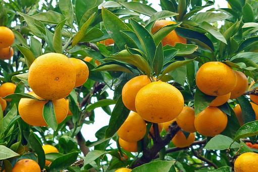

農家の方も、加工会社の方も。まずは資料をご覧ください。

みかん農家と加工会社をつなぐ、新しい農業のかたち
Citrus Linkは、神奈川県小田原地域を中心に、温州みかん農家と食品加工会社を直接結びつける契約農業モデルを展開しています。 農協を介さない新しい流通経路を構築し、農家の価格交渉力と加工会社の安定調達の両立を目指します。
「Citrus Linkで直接販売ができるようになって、収入が安定しました」
― 小田原市・みかん農家
「品質が高くて安心して原料調達ができるように。毎年お願いしています」
― 加工会社・仕入担当
「お客様にみかんのストーリーも一緒に届けられる商品。好評です」
― セレクトショップ運営者
初年度は5〜10軒の契約農家と連携し、都市部への販路開拓・加工会社との提携を進めます。2年目以降は他地域・他果実への水平展開も視野に入れています。
ご質問や提携のご相談は、以下の連絡先までお気軽にご連絡ください。
Email: okamoto04140414@gmail.com
Tel: 070-8337-1350
屋号： Citrus Link（個人事業主）
代表者： 岡本晴輝
所在地： 神奈川県藤沢市湘南台2-5-5
設立予定： 2025年9月1日
事業内容： 契約農業仲介・ブランディング支援・販路開拓